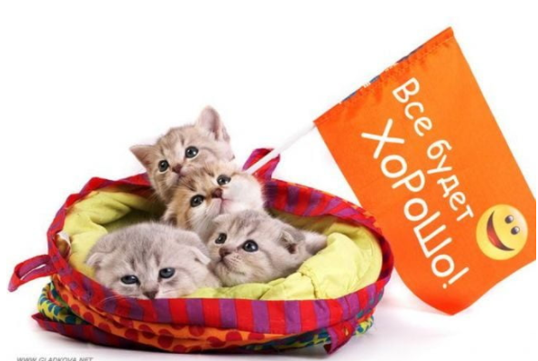

Если ты хочешь денег - иди работай!
Хочешь любви? Выйди на улицу и улыбнись!
Хочешь собаку или кошку? Иди в приют для животных! Там есть те, кому нужна твоя помощь!

Ты хотел собаку? Посмотри характеристики некоторых пород, тебе будет полезно
| Характеристики пород собак |
|
Длина шерсти |
Характер |
Обучаемость |
| Овчарка |
Длинная |
Добрый |
Высокая |
| Лайка |
| Такса |
Короткая |
Низкая |
| Доберман |
Злой |
Дополнительную информацию можно найти тут: О
собаках